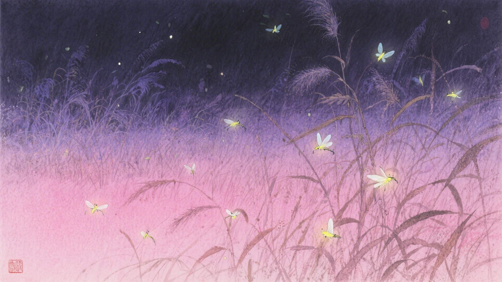
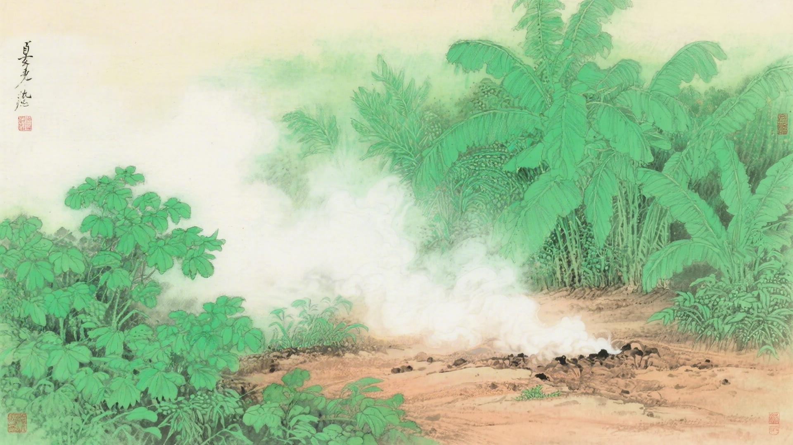
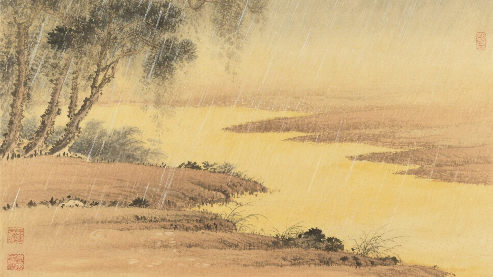
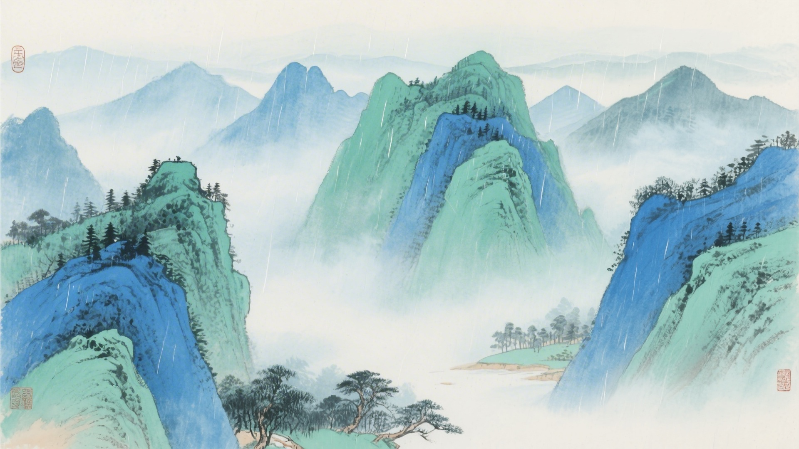
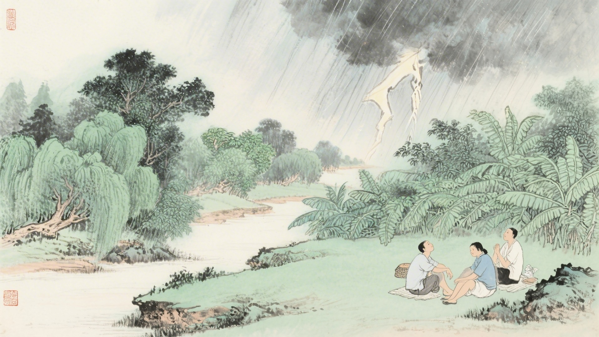

《中国传统色：故宫里的色彩美学》一书中为什么把下面这些颜色归入大暑节气？
夕岚、雌霓、绛纱、茹藘
葱青、少艾、绮钱、翠樽
石蜜、沙饧、巨吕、吉金
山岚、渌波、青楸、菉竹
大暑是一年中最热的时候。腐草变成萤火虫，土里蒸出湿气，大雨倾盆而下。古人说大暑有三候：腐草为萤，土润溽暑，大雨时行。这十六种颜色，便从这三候里来。
大暑的"大"，是热到了极致。太阳像是发了狠，把所有的热量都倾倒下来。颜色也热得化开，红的热烈，青的清凉，像是冰与火在较量。
对应：大暑节气一候"腐草为萤"的起、承、转、合四色。
色彩意象：腐草中生出萤火虫，夜色中闪烁微光。
从淡紫到深红，是萤火虫在夜色中飞舞的色彩变化，也是大暑之夜最梦幻的景象。

对应：大暑节气二候"土润溽暑"的起、承、转、合四色。
色彩意象：土地湿热，万物疯长。
从嫩绿到翠绿，是湿热土地上万物疯长的色彩变化，也是大暑时节最蓬勃的生机。

对应：大暑节气三候"大雨时行"的起、承、转、合四色（其一）。
色彩意象：大雨倾盆，暑气稍减。
从琥珀到青铜，是大雨降临前后的色彩变化，也是大暑时节最丰富的质感。

对应：大暑节气三候"大雨时行"的起、承、转、合四色（其二）。
色彩意象：雨后山野，清新如洗。
从雾白到翠绿，是雨后山野的色彩变化，也是大暑时节最清新的风景。

大暑这天，最盼着下雨。雨一来，热气就散了，人也活了。颜色也跟着松一口气，红的不再那么烫，青的不再那么冷，黄的也不再那么闷。

颜色也懂得熬。它们在最热的时候，把自己缩到最小，藏在树荫下，藏在水波里，藏在雨滴中。等雨过天晴，再出来亮一亮。像是躲猫猫，又像是躲暑气。
（以上解读不代表原书观点）